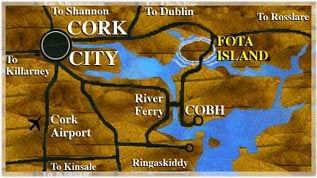

How to Get to FOTA
FOTA Wildlife Park is situated 10km east of Cork City, just off the
N25. Take the Cobh Road.

There is a Direct Rail Service to FOTA Wildlife Park Station. Cork to
Fota only 15 minutes. This train connects to intercity trains to Dublin.
Fota is only 15 minutes
from Cork Airport.
